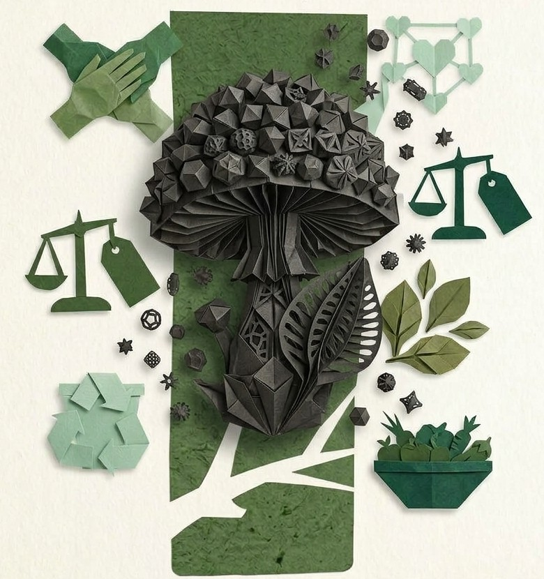
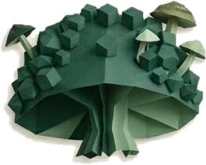
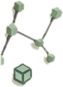
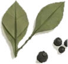
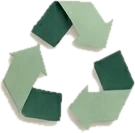
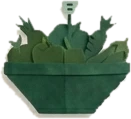

ESPORA
ESPORA aglutina iniciativas de investigación, docencia e innovación territorial que observan el territorio para transformarlo, con la Universidad de Aysén en el centro y al servicio de la comunidad.


¿Qué es ESPORA?
- Observatorio territorial
- Levanta y georreferencia datos de terreno —disponibilidad, precios, origen y entornos alimentarios— mediante instrumentos de observación conectados y desconectados.
- Contenedor conceptual
- Reúne las líneas de investigación Economía Social, Solidaridad, Precios, Orgánicos, Residuos y Alimentación bajo un mismo marco de economía social y alimentación sostenible.
- Aglutinador de iniciativas
- No es la única instancia ni el fin: innova constantemente y sirve de soporte a investigadores, docentes, estudiantes y comunidad, poniendo en el centro a la Universidad de Aysén.
- Campo de formación I+D
- Cada iniciativa contenida opera como proceso de investigación y desarrollo abierto, donde enseñanza y aprendizaje ocurren en el territorio, junto a los actores reales.
Anclaje al Plan de Desarrollo de Capacidades en Investigación
Incentivo FIUT
El Plan define una hoja de ruta decenal para el fortalecimiento de la investigación en la Universidad de Aysén y se estructura en cuatro ejes estratégicos. ESPORA se constituye como instrumento operativo de esos ejes:
- Cambio climático y territorio sostenibleGestión y revalorización de residuos orgánicos, entornos alimentarios.
- Patrimonio, desarrollo y bienestar humanoEconomía social, organizaciones territoriales, imaginarios sociales.
- Innovación tecnológica y desarrollo productivoPlataforma de datos, inteligencia artificial asistida, sistemas de información geográfica.
- Transición energética en la Patagonia-AysénBiodigestión y valorización energética de residuos orgánicos (línea en desarrollo).
Las seis líneas de la sigla
-
Economía Social
Organizaciones comunitarias y producción local como base del desarrollo territorial.
-
Solidaridad
Circuitos solidarios como parte de las relaciones económicas y comunitarias del territorio.
-

Precios
Observación sistemática de precios y disponibilidad de alimentos para el diagnóstico de entornos alimentarios.
-

Orgánicos
Residuos orgánicos como recurso: compostaje, digestión y retorno de nutrientes al territorio.
-

Residuos
Gestión comunitaria y revalorización, desde los imaginarios sociales hasta las soluciones técnicas.
-

Alimentación
Entornos alimentarios saludables, cadenas de abastecimiento y soberanía alimentaria regional.
Menú de proyectos
Seleccione una categoría y despliegue cada tarjeta para conocer el proyecto. Las iniciativas se presentan en sus sitios propios; ESPORA las visibiliza y conecta.
Observatorio Territorial de Economía Social y Alimentación Observación territorial · Coyhaique · Marco de referencia: FAO & Ambientes Alimentarios — UBB Activo
Levantamiento georreferenciado de disponibilidad, precios y origen de alimentos en locales de la comuna. Instrumentos de terreno con guardado local y sincronización, códigos de local de muestra y filtros por unidad vecinal.
La información alimenta el diagnóstico de entornos alimentarios y la generación de políticas públicas locales.
Herramienta de captura para el equipo en terreno. El sitio enlazado sirve para registrar observaciones; no es un visor público de datos ni de resultados.
Abrir herramienta de captura — uso en terreno (se abre en una pestaña nueva)Laboratorio Vivo de Revalorización de Residuos Orgánicos Laboratorio vivo · Coyhaique · Educación e investigación vinculadas En desarrollo
Espacio donde estudiantes de ciencias sociales, ciencias naturales y tecnologías trabajan conjuntamente en torno a procesos de revalorización —compostaje industrial, biodigestores y otras soluciones emergentes— instalando la teoría en prácticas con la comunidad.
Opera con lógica de investigación y desarrollo (I+D): procesos abiertos y no controlados, donde el trabajo colectivo genera soluciones que ningún actor anticipó individualmente. El entorno docente cruza disciplinas a nivel estudiantil y docente, con horizonte transdisciplinario.
Plataforma de Organizaciones Sociales — Región de Aysén Formación · Trabajo Social y Discapacidad (TSE013-1) Activo
Investigar estas agrupaciones y visibilizarlas públicamente son un mismo acto: la intervención no es una etapa posterior al diagnóstico, sino su despliegue directo en el territorio.
Producto central del curso TSE013-1: fichas georreferenciadas y accesibles de organizaciones de personas con discapacidad y neurodivergencia, publicadas solo con consentimiento informado y validación de cada organización.
Ir a la plataforma (se abre en una pestaña nueva)Imaginarios sociales sobre la gestión de residuos orgánicos En desarrollo · Estudio PASD-Residuos, Fases 1–3 · Línea sociociberética En desarrollo
Estudio con actores del mundo político, científico y de la sociedad civil, usuarios y macroproductores de residuos, para visibilizar acoples y desacoples en la gestión de residuos orgánicos desde la observación de segundo orden (Pintos, Luhmann).
La codificación se apoya en inteligencia artificial asistida con protocolo de roles: la máquina audita corpus y propone segmentación; la interpretación es responsabilidad humana. Todo el material es 100 % anonimizado.
No hay iniciativas en esta categoría por ahora.
Lógica de participación: investigar es intervenir
-
Paso 1: Contacto formal
La organización, comunidad o actor territorial contacta al equipo y se coordina una primera reunión.
-
Paso 2: Consentimiento informado
Quienes participan deciden qué información se publica. Ninguna ficha se publica sin consentimiento explícito y documentado.
-
Paso 3: Levantamiento de terreno
El equipo estudiantil y académico levanta la información, georreferencia y redacta en lenguaje claro, siguiendo criterios de accesibilidad WCAG 2.1 AA.
-
Paso 4: Validación y publicación
Los participantes revisan y validan el contenido. Solo entonces queda visible públicamente, y puede actualizarse o retirarse en cualquier momento.
Para consultas y coordinación, escribe a esteban.cofre@uaysen.cl.
Ética y transparencia
- Anonimización garantizada: ningún dato identificatorio de participantes se solicita ni procesa en los estudios de imaginarios sociales.
- Propiedad de los datos: la información publicada pertenece a las organizaciones y comunidades que la entregan.
- IA con roles delimitados: la inteligencia artificial asiste la recolección, el procesamiento y la visualización de datos; la codificación, la interpretación y la redacción analítica son responsabilidad humana.
- Marco sociociberético: la observación de segundo orden obliga a examinar los condicionamientos de las propias herramientas, incluida la IA misma.
- Referencias validadas: Bioaqua/GORE Aysén (2026), SUBDERE (2024), SINIM (2025), MMA (2021).